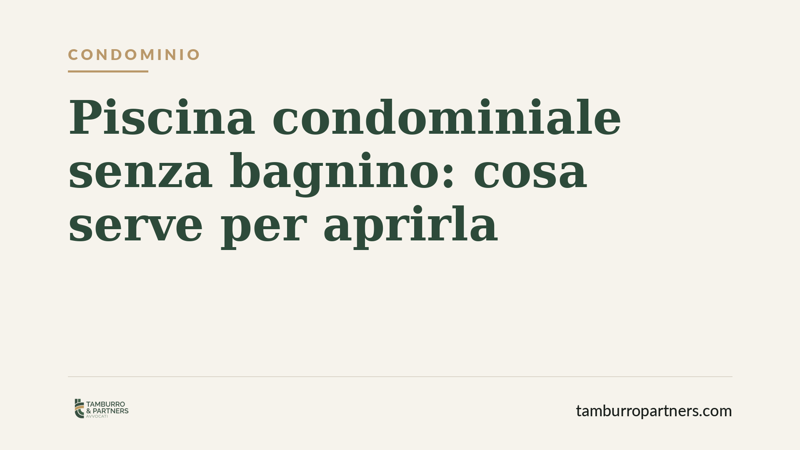

Piscina condominiale senza bagnino: cosa serve per aprirla
Aprire la piscina condominiale senza bagnino è possibile, ma non è una scelta libera. Molto dipende dalla natura della clausola che disciplina la sorveglianza e dalle norme regionali sulla sicurezza delle vasche. Anche dove non c'è un obbligo esplicito, rinunciare alla sorveglianza espone il condominio a un rischio di responsabilità che va valutato prima di mettere ai voti la questione.

Il punto di partenza
La domanda ricorre ogni estate: si può decidere di tenere aperta la piscina condominiale senza la presenza di un assistente bagnanti? La risposta non è secca. Prima di convocare l'assemblea occorre stabilire due cose: quale tipo di regola disciplina oggi la sorveglianza e cosa impone la normativa regionale applicabile.
Sono profili distinti. Il primo riguarda i quorum interni necessari per modificare le regole condominiali. Il secondo riguarda gli obblighi di sicurezza che gravano sull'impianto a prescindere dalla volontà dei condomini.
Inquadramento normativo
Il nodo decisivo è la natura della clausola sull'obbligo di sorveglianza. Se il vincolo è contenuto in una previsione regolamentare — cioè in una norma di organizzazione dell'uso delle parti comuni — l'assemblea può modificarlo con le maggioranze previste dall'art. 1136 cod. civ., in combinato con l'art. 1138 cod. civ. che disciplina il regolamento di condominio.
Se invece la clausola ha natura negoziale — perché incide su diritti dei singoli condomini o è stata trascritta come vincolo contrattuale, spesso nel regolamento predisposto dall'originario costruttore — la sua modifica richiede il consenso unanime di tutti i condomini. La distinzione è tecnica ma pratica: sbagliare l'inquadramento significa adottare una delibera annullabile o addirittura nulla, con il rischio di impugnazione.
A questo si aggiunge il quadro delle normative regionali sulla sicurezza delle piscine a uso collettivo. Molte Regioni, sulla scia dell'Accordo Stato-Regioni in materia, distinguono tra piscine ad uso pubblico e piscine condominiali ad uso esclusivo dei residenti, prevedendo per queste ultime regimi meno rigidi. In alcuni casi la presenza dell'assistente bagnanti non è imposta per legge quando l'accesso è riservato ai soli condomini e agli ospiti. Ma la disciplina varia da territorio a territorio: va verificata quella concretamente applicabile.
Implicazioni pratiche
Anche quando la legge regionale non impone il bagnino, la decisione di rinunciare alla sorveglianza non è priva di conseguenze. Il condominio è custode dell'impianto e risponde, secondo i principi generali sulla responsabilità da cose in custodia, dei danni che la piscina può causare. In caso di incidente, l'assenza di sorveglianza — pur non vietata — potrebbe essere valutata come elemento di colpa nell'organizzazione dell'uso del bene.
Per i condomini questo significa che la delibera di apertura senza bagnino andrebbe accompagnata da misure alternative: cartellonistica chiara, regole d'uso, orari, limitazioni all'accesso dei minori non accompagnati, dispositivi di sicurezza. L'obiettivo non è solo rispettare la legge, ma ridurre in concreto l'esposizione a responsabilità.
Per l'amministratore, il tema è duplice: verificare la legittimità formale della delibera e assicurarsi che l'impianto rispetti i requisiti tecnici e igienico-sanitari richiesti, indipendentemente dalla scelta sulla sorveglianza.
Cosa fare in concreto
- Verificate la natura della clausola. Recuperate il regolamento condominiale e stabilite se l'obbligo di sorveglianza è regolamentare (modificabile a maggioranza) o negoziale (che richiede l'unanimità). In caso di dubbio, fate esaminare il testo prima di deliberare.
- Controllate la normativa regionale. Individuate la disciplina della vostra Regione sulle piscine condominiali e verificate se l'assistente bagnanti è obbligatorio per la tipologia del vostro impianto.
- Adottate misure di sicurezza alternative. Anche senza obbligo di bagnino, predisponete regolamento d'uso, cartelli, limiti di accesso e dispositivi che riducano il rischio di incidenti.
- Formalizzate la delibera con precisione. Indicate nel verbale il fondamento normativo, il quorum raggiunto e le misure di sicurezza adottate, così da rendere la decisione difendibile in caso di contestazione.
- Consigliamo di verificare la copertura assicurativa. Assicuratevi che la polizza del condominio copra i rischi connessi all'uso della piscina anche in assenza di sorveglianza professionale.
In sintesi
Aprire la piscina senza bagnino può essere legittimo, ma richiede un doppio controllo — sulla natura della clausola e sulla normativa regionale — e una gestione consapevole del rischio. La scelta di risparmiare sulla sorveglianza va bilanciata con misure che tutelino sia gli utenti sia il condominio.
---
*Contributo informativo a cura di Tamburro & Partners - Avv. Giuseppe Tamburro. Non costituisce parere legale.*
Ogni condominio ha una storia a sé.
Se gestisci un'amministrazione e vuoi un confronto su una specifica questione condominiale, scrivi allo studio. Ti rispondiamo entro un giorno lavorativo.